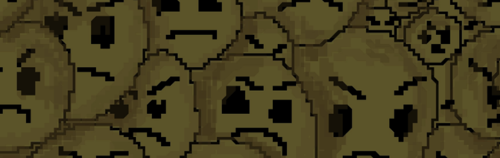

Team G.E.R. - это маленькая, но талантливая команда профессионалов, которая занимается созданием уникальных и захватывающих игровых проектов. Основанная на энтузиазме и любви к игровой индустрии, студия ставит перед собой цель подарить миру незабываемые впечатления от игры, используя передовые технологии и творческий подход. В нашем арсенале есть опыт работы с различными жанрами и платформами, включая казуальные игры, головоломки, приключения и многое другое. Мы стремимся создавать игры, которые не только развлекают, но и развивают мышление и навыки игроков. Наша маленькая студия обладает рядом преимуществ, которые позволяют нам быть на шаг впереди конкурентов. Во-первых, мы обладаем высокой степенью гибкости и адаптивности, что позволяет нам быстро реагировать на изменения на рынке и удовлетворять потребности игроков. Во-вторых, мы уделяем особое внимание качеству наших игр, стремясь создать продукты, которые будут долго радовать наших пользователей. В-третьих, наши разработчики постоянно совершенствуют свои навыки и знания, изучая новые технологии и методы разработки. Для нас важно поддерживать связь с нашими игроками, чтобы понимать, какие игры им нравятся и какие функции они хотели бы видеть в будущих проектах.
